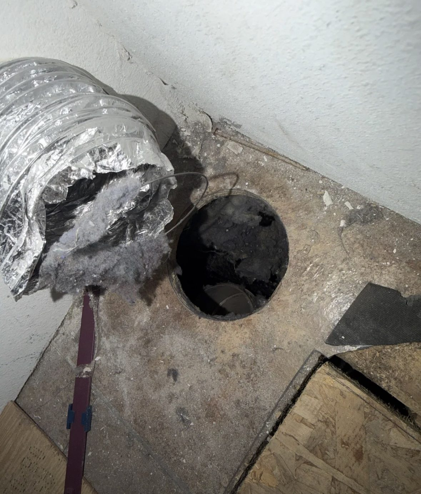
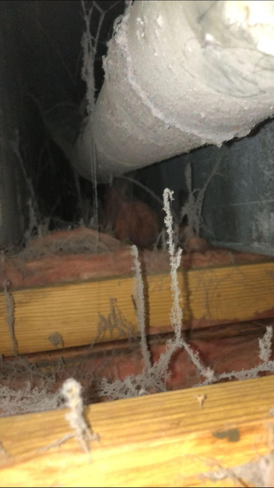
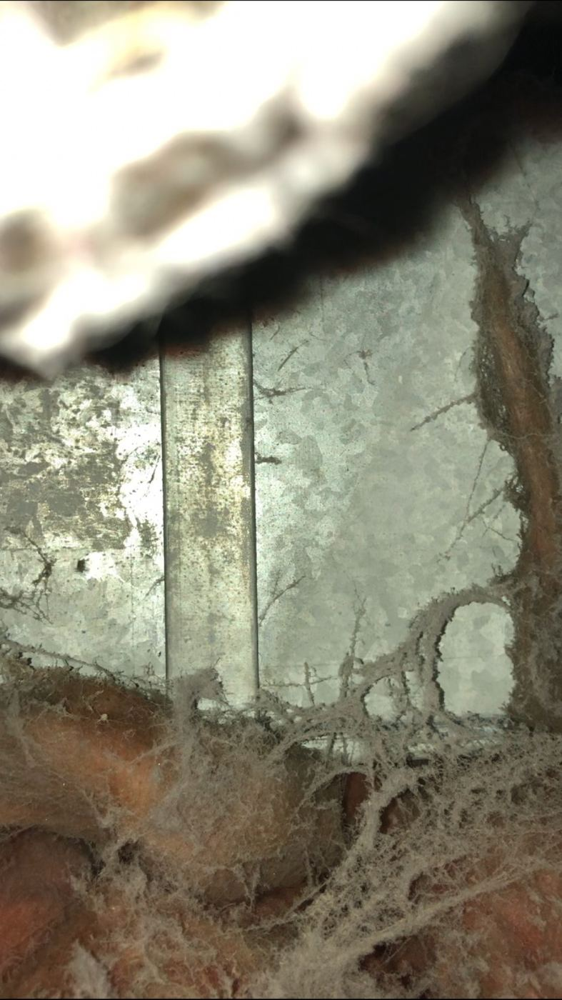
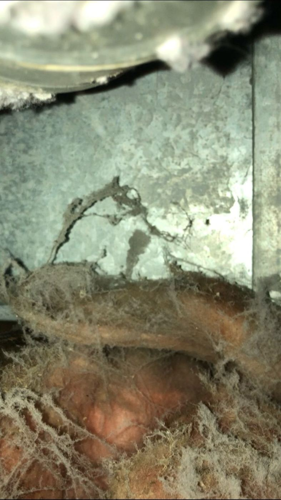
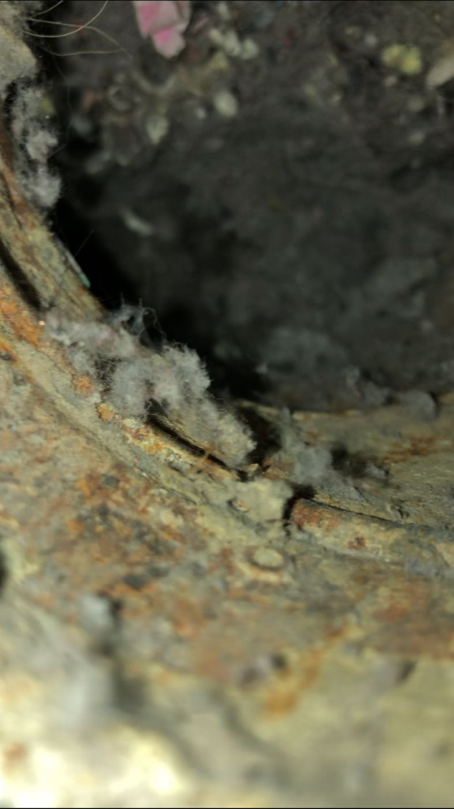

1What is happening under the house





The flexible silver duct that should carry your dryer’s exhaust to the outside has come disconnected. All the heat, moisture, and lint from every load of laundry is going straight into the dark, enclosed crawl space under your home.
In cases just like this, the loose lint was still damp days after the dryer had last been used. That tells you how much moisture is trapped down there with nowhere to go.
2How this happened
The vent used to go outside, the way it should. Then someone tried to clean the vent pipe out with a water hose — and the force of the water knocked the pipe loose. From that day on, everything the dryer exhausted went straight under the house instead of outside.
Years earlier, an above-ground pool collapsed while it was full of water, and that water seeped down into the crawl space too. So the space under the house has been soaked more than once, and damp ever since.
A lint trap was fitted onto the dryer hose as a temporary fix — but by then, years of damage had already built up. A trap on the hose catches lint. It does nothing about the moisture, and it is not a vent to the outside.
3Fire hazard: lint is extremely flammable
Lint burns very easily — it is one of the most flammable things in a house. Right now it is piling up inside a dark, enclosed space under your home.
The U.S. Fire Administration reports about 2,900 home clothes dryer fires every year in the United States — an estimated 5 deaths, 100 injuries, and 35 million dollars in property damage. The leading cause, at 34 percent, is failure to clean the dryer. Lint buildup in an enclosed space is exactly the kindling those fires start from.
4Mold, including black mold
Years of hot, damp air circulating under a home is the perfect recipe for mold — including black mold. Mold needs only moisture and time, and this gives it both.
According to the Centers for Disease Control and Prevention, exposure to damp and moldy environments can cause a stuffy nose, sore throat, coughing or wheezing, burning eyes, or skin rash. People with asthma or mold allergies can have severe reactions. People with weakened immune systems or chronic lung disease can develop lung infections from mold.
If you have had a lingering cough, congestion, or itchy eyes that never quite go away, this could be part of the reason — and it is worth telling your doctor about.
5The wood under your floors can rot
All that moisture does not just feed mold — it rots the wood your house sits on. The subfloor and the floor joists can rot from underneath, where you cannot see it from inside the house.
Rotted joists are structural damage. Repairing them costs far more than reconnecting one duct — which is why this should be fixed before the moisture has years to work.
6Rats and mice move in
A warm, sheltered crawl space full of soft lint is an invitation to rats and mice. Once rodents settle in under a house, they chew wiring, contaminate insulation, and are very hard to get rid of.
7This is not normal — and not okay
A dryer must vent to the outside of the building — never into a crawl space or an attic. That is not an opinion; it is the building code. The International Residential Code, section M1502, says dryer exhaust systems “shall convey the moisture to the outdoors,” that “exhaust ducts shall terminate on the outside of the building,” and that air “shall not be exhausted into an attic, soffit, ridge vent or crawl space.”
If anyone — a landlord, a handyman, anyone — tells you it is fine the way it is, they are wrong. Do not let this get brushed off. You are not being picky.
8What to do about it
Get maintenance — or your landlord — on this as soon as possible. If you rent, fixing this is the landlord’s responsibility, not yours.
Take photos of it exactly as it is first, so there is a record of what was wrong before anyone touches it.
The fix itself — cleaning the piping, then reconnecting and sealing the duct so all the moisture goes outside — is not a big or expensive job for someone who can get under the house. The outside end needs a proper vent cap with a damper so cold air cannot blow back in.
Do not wait on this. The fix is small. The mold and the rot are the big deal — and they only get worse with time. Reputable local companies who can do this work are listed in part 16, below.
9Your health profile, and why researchers would flag it
The facts that matter for this question: you are 73; you have stage 3a chronic kidney disease (eGFR 50 in June 2026); you developed shortness of breath (documented June 2026) and a cough (documented May 2026); and you carry two rescue inhalers — albuterol and Airsupra (albuterol-budesonide) — for use as needed. You also take heart and blood-pressure medications.
Three separate bodies of research — on mold and aging lungs, on mold and reactive airways, and on fine particles and kidneys — each point at a different line of your chart. That is what makes this worth a conversation with your doctor rather than a shrug.
The exposure history is longer than the disconnected vent alone. Years ago, an above-ground pool collapsed while full, and the water seeped into the crawl space. Later, the vent pipe — which originally ran to the outside — was knocked loose when someone tried to clean it with a water hose. A lint trap fitted on the dryer hose was only ever a temporary fix. So this is not months of dampness; it is years of moisture events layered on top of each other — exactly the conditions mold needs.
10Breathing: the strongest link
Your two newest symptoms are shortness of breath and cough — both documented in the last five months — and you use rescue inhalers, which means your airways are already reactive. Here is what the research says about that combination:
- In 2004 the Institute of Medicine found sufficient evidence linking indoor mold exposure to upper respiratory symptoms, cough, and wheeze in otherwise healthy people — and to asthma symptoms in people with asthma. The CDC carries the same finding today.
- Older adults are hit harder: aging lungs have weaker breathing muscles and less flexible tissue, so inhaled spores stay in the lungs longer and do more damage. One clinical summary notes that COPD patients exposed to mold need medical care four times more often.
- The CDC lists the elderly, people with asthma or mold allergies, and people with chronic lung disease as the groups at greatest risk — and notes that immune-compromised people and people with chronic lung disease can develop lung infections from mold.
11Kidneys: the emerging link
This one is newer science, and it deserves a careful telling. Large studies in the last few years have tied fine-particle air pollution to kidney damage:
- A Taiwan study of 472,141 patients with early-stage CKD — including stage 3a, your stage — found that long-term reductions in fine-particle (PM2.5) exposure were associated with substantially lower risks of progressing to advanced kidney disease, starting dialysis, or dying. It was published in the journal Environmental Health.
- A São Paulo study of 37,170 hospital records (published in Scientific Reports) found PM2.5 exposure increased the risk of hospitalization for chronic kidney disease by one to four times across age groups.
- A U.S. study of the NEPTUNE and CureGN kidney cohorts (published in Kidney International Reports) found the risk of a 40% or greater decline in kidney function, or kidney failure, rose 55% for each doubling of fine-particle exposure.
The proposed mechanism: fine particles enter the bloodstream, lodge in kidney tissue, and trigger inflammation and scarring. Researchers describe it as the immune system treating the particles as foreign bodies.
12Age 73 plus kidney disease: less immune resilience
Two things independently weaken the immune system: aging, and chronic kidney disease — even at stage 3a, well before dialysis. You have both.
That matters because the CDC’s warning about mold is sharpest for exactly these groups: older adults and people with weakened immunity face higher odds of respiratory infections, slower recovery, and — in the case of mold — lung infections that healthy adults would fight off. You are not severely immunocompromised, but you have less margin than a healthy adult, and chronic exposure is the scenario where that margin matters.
13What is actually in dryer-lint dust
It is not just “dust.” Published research on dryer emissions describes three things worth knowing:
- Microfibers, by the hundred-thousand. One study measured roughly half a million cotton and polyester microfibers released in 15 minutes of drying (Environmental Science & Technology Letters, 2022). The lint trap catches the coarse fibers; fibers smaller than a tenth of a millimeter sail right through. Microfibers have since been detected in human lung tissue.
- Chemical residues. Lint carries what was in the laundry: fabric dyes, detergent and softener residues, fragrances — warmed into volatile organic compounds (VOCs) by the heat of the dryer.
- Dust mites. Warm, damp, fibrous lint is ideal habitat for dust mites, whose droppings are one of the most potent indoor allergens known. Your chart says “no known allergies” — but sensitization can develop with chronic exposure, and non-allergic airway irritation happens regardless.
Endoscope photos taken inside the crawl space confirm it: lint matted thick across every surface, hanging in strands between the floor joists, with rust-colored staining where moisture has sat for a long time.
14Weaker links: stated carefully
Two more associations show up in the literature. The evidence here is thinner, so they are flagged as questions, not conclusions:
- Headaches. Some reports associate mold’s volatile compounds (MVOCs) with headaches and difficulty concentrating. Your chart notes a sudden-onset one-sided headache. The link is plausible but not well established — worth mentioning, not worth assuming.
- Thinking and memory. Mouse studies have linked mold exposure to inflammation affecting memory and balance; human evidence is preliminary. Your chart notes brain atrophy (November 2025). There is no basis for connecting the two — this is included only so nobody else draws that line for you.
15Questions to bring to your doctor
You have an office visit with Dr. Samonte on October 16. These are the questions this research earns:
- “My dryer vent has been disconnected for a long time, blowing damp, moldy air under the house. Could that be contributing to the shortness of breath and cough that started this spring?”
- “Has my rescue-inhaler use increased over the past year? Should we track it against the home environment?”
- “Recent large studies link fine-particle exposure to faster CKD progression, even at stage 3a. Given my eGFR of 50, should we watch my kidney labs more closely while this exposure continues?”
- “Is allergy or mold-sensitivity testing worth doing?”
- Bring the photos of the disconnected duct and the crawl space on your phone. Doctors take environmental exposures more seriously when they can see them.
And the Taiwan study carries a hopeful note: when particle exposure went down, outcomes got better. Fixing the vent is not just prevention — it may be treatment.
16Who can fix this: reputable companies near Logansport
These are real companies that serve Logansport, Indiana (46947). Review ratings below were checked in October 2026. Call two or three for quotes. Tell each one: (1) the dryer vent must be reconnected to the outside with a damper, per code; (2) the crawl space needs mold testing and remediation; (3) ask what keeps it from coming back — encapsulation or a dehumidifier.
- An extension cord cannot legally do this job. The National Electrical Code (NEC 400.8) says flexible cords shall not be used as a substitute for a structure’s fixed wiring — and a dehumidifier that lives in the crawl space permanently needs permanent wiring. The U.S. Consumer Product Safety Commission says the same: extension cords are for temporary use only, never as permanent household wiring.
- It is a fire risk. The Electrical Safety Foundation International reports roughly 3,300 home fires a year start in extension cords. Their rules: never substitute a cord for permanent wiring, never run one through walls, doorways, or floors — and if you are relying on cords, have outlets installed where you need them. A cord snaked from the house outlet into the crawl space breaks all three rules.
- Water and electricity do not mix. Crawl spaces are damp — that is the whole problem. A cord lying in damp soil is a shock hazard. A properly installed crawl-space outlet is GFCI-protected, which cuts the power instantly if current leaks.
- The seal matters. The cord has to pass through the crawl-space vent or access door, which means the opening can never fully close — letting moisture, and the mice from part 6, right back in. That undoes the encapsulation you are paying for.
- If the cord gets kicked loose, nobody knows. A dehumidifier quietly unplugged means the moisture comes back and the mold starts over. A dedicated outlet stays put.
King’s Cleaning Solutions
Dryer vent cleaning. Based in Kokomo, serves Logansport. 5.0 stars from 15 customer reviews; bonded, certified, and insured. Also does air-duct cleaning.
Hazvet LLC
Mold testing & remediation. Local, veteran-owned, at 2021 E. Broadway, Logansport, IN 46947. State-licensed for mold testing, remediation, and contracting. No public customer reviews found as of October 2026 — ask for references and proof of insurance before hiring.
PuroClean of Lafayette
Mold remediation & crawl-space moisture. Certified restoration company serving the Logansport area. 5.0 stars from 12 reviews (Birdeye). 24/7 emergency response.
Acculevel
Crawl-space encapsulation (prevention). Serves Logansport. A+ BBB rating; 4.8 out of 5 from more than 2,000 customer reviews. Seals the crawl space against moisture for good.
Indiana Foundation Service
Crawl-space encapsulation (prevention). Serves Kokomo and the surrounding area. A+ BBB rating; 4.7 from over 1,500 reviews. Free inspections.
Basement Systems of Indiana
Crawl-space encapsulation (prevention). Vapor barriers, dehumidifiers, and sump systems. 4.7 stars from 61 reviews (HomeAdvisor). Free estimates.
Phone numbers and websites were verified from public listings in October 2026 — call to confirm current hours before driving over.